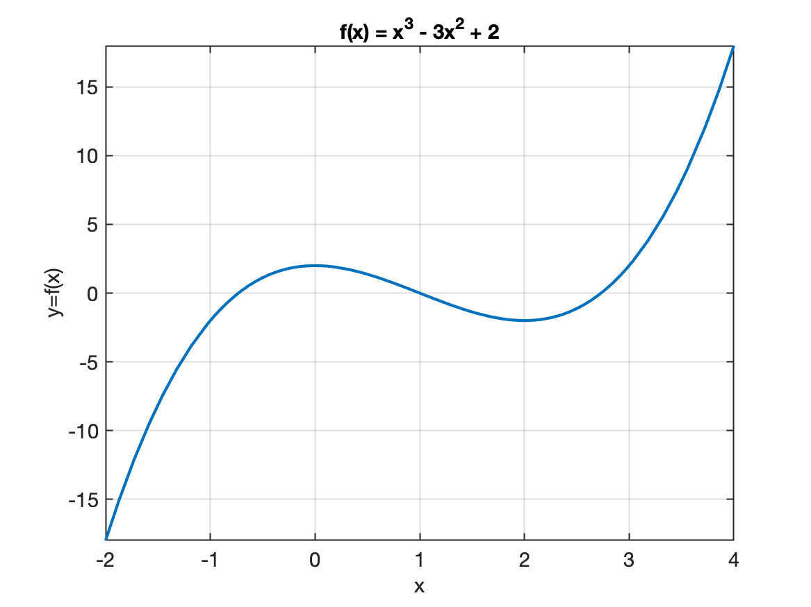
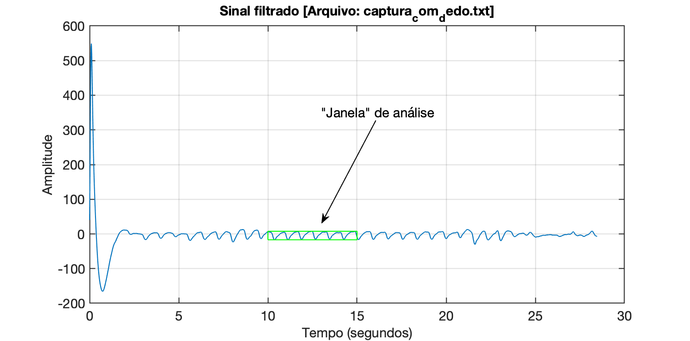
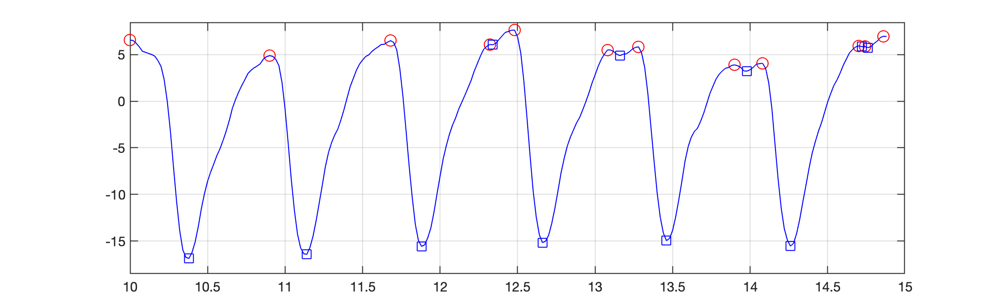
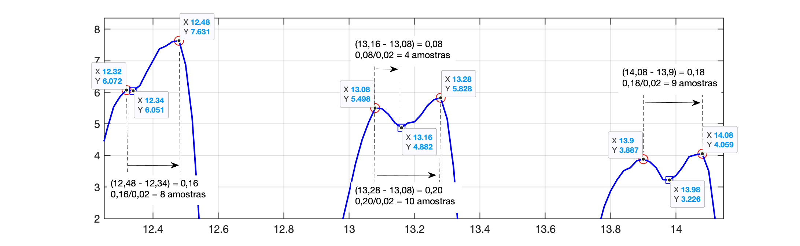
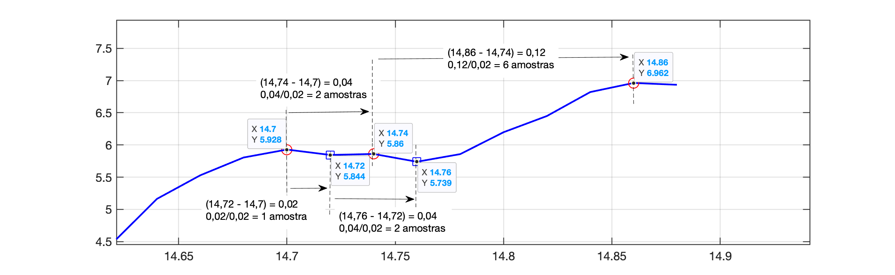
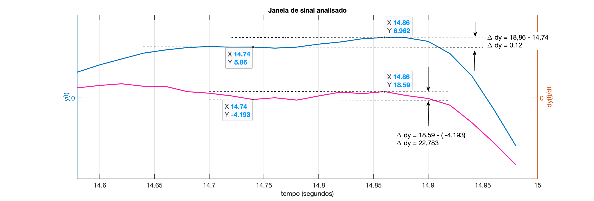
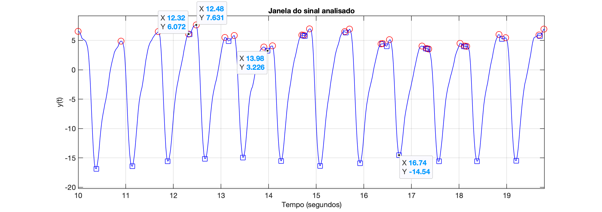
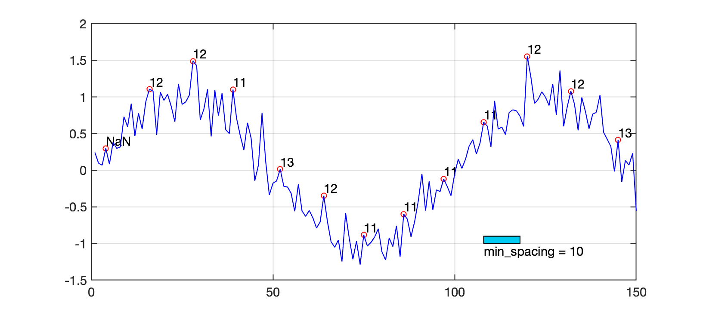

Detectores de Picos
Detectores de PicosIntroduçãoPrincipais insightsDerivada PrimeiraDerivada SegundaExemploVersão considerando derivadasImplementação em MATLABVersão considerando Espaçamento MínimoVersão considerando arquivo "bag" de dadosVersão considerando largura dos "vales"Exemplo em MATLABOutros MétodosConclusãoReferências
Introdução
A detecção de picos em sinais ruidosos é uma tarefa crítica em diversas aplicações científicas e de engenharia. Algoritmos baseados na primeira e segunda derivadas são comumente usados para identificar picos, detectando mudanças na inclinação do sinal. Esses métodos devem lidar com ruído de maneira eficaz e distinguir picos verdadeiros de flutuações aleatórias.
Principais insights
Metodos baseados em Derivada primeira e segunda:
Seguem maiores exmplicações.
Derivada Primeira
Encontrar os Pontos Críticos:
- A derivada primeira de uma função , denotada por , representa a taxa de variação da função.
- Para encontrar os pontos críticos, você deve resolver . Esses pontos são onde a inclinação da função é zero, ou seja, onde a função pode ter um máximo, mínimo ou ponto de inflexão.
Teste da Derivada Primeira:
- Após encontrar os pontos críticos, você pode usar o sinal de antes e depois desses pontos para determinar se eles são máximos ou mínimos.
- Se muda de positivo para negativo ao passar por um ponto crítico, esse ponto é um máximo local.
- Se muda de negativo para positivo, o ponto crítico é um mínimo local.
Derivada Segunda
Teste da Derivada Segunda:
- A derivada segunda de uma função , denotada por , fornece informações sobre a concavidade da função.
- Avalie nos pontos críticos encontrados anteriormente.
- Se em um ponto crítico, a função é côncava para cima nesse ponto, indicando um mínimo local.
- Se , a função é côncava para baixo, indicando um máximo local.
Exemplo
Vamos considerar uma função: . Um gráfico na região resulta:

Derivada Primeira: :
- Encontramos os pontos críticos resolvendo: , o que dá e .
Teste da Derivada Primeira:
- Para : muda de negativo para positivo, indicando um mínimo local.
- Para : muda de positivo para negativo, indicando um máximo local.
Derivada Segunda:
Avaliando nos pontos críticos:
- Para : (máximo local).
- Para : (mínimo local).
Determinando valor pontos de mínimo e máximo
- Para : (ponto de máximo);
- Para : (ponto de mínimo).
Gráficos resumo abaixo:

Vers√£o considerando derivadas
Em um sistema embarcado com memória limitada, você deve implementar um algoritmo eficiente que utiliza as derivadas primeira e eventualmente a derivada segunda para identificar máximos e mínimos locais em tempo real, sem armazenar muitos pontos.
Segue pseudo-código considerando cálculo de derivadas
xxxxxxxxxxinicializar prev_y = 0, prev_dy = 0T = intervalo de amostragem​para cada nova amostra y(t) faça:% Calcular a derivada primeira (aproximação)dy = (y(t) - prev_y) / T% Calcular a derivada segunda (aproximação)ddy = (dy - prev_dy) / T% Verificar condições para máximo localse prev_dy > 0 e dy < 0 entãoimprimir "Máximo local encontrado em t =", t-T, "com valor", prev_y% Verificar condições para mínimo localse prev_dy < 0 e dy > 0 entãoimprimir "Mínimo local encontrado em t =", t-T, "com valor", prev_y% Atualizar variáveis para a próxima iteraçãoprev_y = y(t)prev_dy = dyfim para
Explicação do Algoritmo:
Inicialização:
prev_yeprev2_yarmazenam os valores das amostras anteriores.prev_dyarmazena a derivada primeira da amostra anterior.
Loop de Aquisição de Dados:
A cada nova amostra
y(t), calcule a derivada primeiradycomo a diferença entre a amostra atual e a anterior, dividida pelo intervalo de amostragemT.Calcule a derivada segunda
ddycomo a diferença entre a derivada primeira atual e a anterior, dividida porT.Verifique as condições para máximos e mínimos locais:
- Um máximo local é identificado se a derivada primeira muda de positiva para negativa.
- Um mínimo local é identificado se a derivada primeira muda de negativa para positiva.
Atualize as variáveis (associadas com amostras passadas) para a próxima iteração.
Implementação em MATLAB
Aqui está uma implementação em MATLAB baseada no pseudo-código acima:
xxxxxxxxxx% detecta_picos_simples.m% Algoritmo exemplo para tentar detectar picos máximos% de sinal capturado real (e filtrado) de sensor foto-elétrico% baseado em cálculos de derivadas% Fernando Passold, em 25/10/2024; 07/11/2024​disp('Rotina para testar algoritmo detector picos...')T = 0.02; % taxa de amostragem adotada (esperada) ou 50 Hz%% Leitura do arquivo "bag"filename = 'captura_com_dedo.txt';fprintf('Nome (e path) do arquivo (bag) de dados: [%s] ', filename);aux = input('? ', 's');if (aux ~= '') filename = aux;enddados = load(filename);[amostras, cols] = size(dados); % espera 2 colunas de dadosx=dados(:,1); % separa x[n] = dados brutosyy=dados(:,2); % separa y[n] = sinal filtrado​fprintf('Arquivo com %d amostras, ou %g segundos de dados\n', amostras, amostras*T);​%% PLotando dados filtradost=0:T:(amostras-1)*T; % cria vetor t (em segundos)figure; % abre nova janela gráficaplot(t,yy);xlabel('Tempo (segundos)');ylabel('Amplitude');aux= [ 'Sinal filtrado [Arquivo: ' filename ']' ];title(aux)H = gcf;fprintf('Informe a "janela" de dados à ser usada para testar algoritmo\n');fprintf('Observe a Figure (%d) e indique:\n', H.Number);t_ini = input('Instante de tempo inicial (em segundos): ? ');t_fim = input('Instante final de tempo (em segundos): ? ');% calculando pontos iniciais e finais em instante de amostragemk_ini = t_ini/T + 1; % +1 pq indices Matlab iniciam em 1 e não em zerok_fim = t_fim/T + 1;u = k_fim - k_ini;max_y = max(yy(k_ini:k_fim));min_y = min(yy(k_ini:k_fim));fprintf('Serão analizadas %d amostras\n', u);fprintf('Com y[k] variando na faixa: [%.2f, %.2f]\n', min_y, max_y);figure(H.Number)hold onx_aux = [t_ini t_fim t_fim t_ini t_ini];y_aux = [min_y min_y max_y max_y min_y];plot(x_aux, y_aux, 'g-');​%% Inicialização de variáveisanterior = 0;prev_dy = 0;​figure; % Abre nova janela gráficaH = gcf; % returns the handle of the nwe current figureclear yyy tt x_aux y_aux​%% varrendo janela de dadosfor k = 1:u % Loop varrendo os dados progressivamente novo_ponto = yy(k_ini + k - 1); % novo valor de amostra % guarda pontos para gerar gráfico em "tempo-real": % plot(tt, yyy) if (k == 1) yyy(1) = novo_ponto; tt(1) = t(k_ini); else yyy = [yyy novo_ponto]; % faz um "append" de dados ao vetor yyy tt = [tt t(k_ini + k - 1)]; end % Calcular a derivada primeira (aproximação) dy = (novo_ponto - anterior) / T; % Calcular a derivada segunda (aproximação) ddy = (dy - prev_dy) / T; % Verificar condições para máximo local if (prev_dy > 0) && (dy < 0) fprintf('[k=%d] Máximo local encontrado em k = %d, com valor: %5.2f\n', k, k-1, anterior); Atualiza_Grafico(H.Number, tt, yyy, min_y, max_y, 'ro'); end % Verificar condições para mínimo local if (prev_dy < 0) && (dy > 0) fprintf('[k=%d] Mínimo local encontrado em k = %d, com valor: %5.2f\n', k, k-1, anterior); Atualiza_Grafico(H.Number, tt, yyy, min_y, max_y, 'sb'); end % atualizando variáveis para próxima interação anterior = novo_ponto; prev_dy = dy;end​%% Subrotina para atualizar 2o-gráficofunction Atualiza_Grafico(num_fig, t, y, min_y, max_y, option); figure(num_fig); plot(t, y, 'b-'); hold on; plot(t(end-1), y(end-1), option, 'MarkerSize', 12); grid; ylim([min_y*1.1 max_y*1.1]); pause;end​Executando análise sobre o arquivo "bag": captura_com_dedo.txt:
xxxxxxxxxx>> detecta_picos_simplesRotina para testar algoritmo detector picos...Nome (e path) do arquivo (bag) de dados: [captura_com_dedo.txt] ? Arquivo com 1424 amostras, ou 28.48 segundos de dadosInforme a "janela" de dados à ser usada para testar algoritmoObserve a Figure (1) e indique:Instante de tempo inicial (em segundos): ? 10Instante final de tempo (em segundos): ? 15Serão analizadas 250 amostrasCom y[k] variando na faixa: [-16.86, 7.63][k=2] Máximo local encontrado em k = 1, com valor: 6.56[k=21] Mínimo local encontrado em k = 20, com valor: -16.86[k=47] Máximo local encontrado em k = 46, com valor: 4.88[k=59] Mínimo local encontrado em k = 58, com valor: -16.43[k=86] Máximo local encontrado em k = 85, com valor: 6.48[k=96] Mínimo local encontrado em k = 95, com valor: -15.57[k=118] Máximo local encontrado em k = 117, com valor: 6.07[k=119] Mínimo local encontrado em k = 118, com valor: 6.05[k=126] Máximo local encontrado em k = 125, com valor: 7.63[k=135] Mínimo local encontrado em k = 134, com valor: -15.17[k=156] Máximo local encontrado em k = 155, com valor: 5.50[k=160] Mínimo local encontrado em k = 159, com valor: 4.88[k=166] Máximo local encontrado em k = 165, com valor: 5.83[k=175] Mínimo local encontrado em k = 174, com valor: -14.96[k=197] Máximo local encontrado em k = 196, com valor: 3.89[k=201] Mínimo local encontrado em k = 200, com valor: 3.23[k=206] Máximo local encontrado em k = 205, com valor: 4.06[k=215] Mínimo local encontrado em k = 214, com valor: -15.55[k=237] Máximo local encontrado em k = 236, com valor: 5.93[k=238] Mínimo local encontrado em k = 237, com valor: 5.84[k=239] Máximo local encontrado em k = 238, com valor: 5.86[k=240] Mínimo local encontrado em k = 239, com valor: 5.74[k=245] Máximo local encontrado em k = 244, com valor: 6.96>> São geradas 2 figuras gráficas:
Figure 1: Sinal original com "janela" de análise de dados ressaltada pelo ret√¢ngulo verde:

Figure 2: Resultado da detecção dos picos:

Note:
Normalmente entre 2 picos locais máximos (positivos) consecutivos, existe um pico local mínimo;
Eventualmente 2 picos locais máximos estão muito próximos como na região segundos. Sugerindo que 2 picos não podem estar localizados muito próximos:

Eventualmente temos uma sucessão de picos positivos e negativos muito próximos como no trecho segundos. Um "zoom" sobre esta área revela:

Conclusão: deveria ser considerado um espaçamento mínimo entre picos consecutivos de mesmo sinal (para evitar detecção de falsos picos).
Versão considerando Espaçamento Mínimo
Este exemplo em MATLAB detecta os picos em tempo real, processando dados de forma incremental, sem a necessidade de armazenar todo o sinal, atualizando as variáveis pico e distancia entre os últimos picos detectados conforme novos pontos de dados são "lidos". A detecção de picos usa a primeira e a segunda derivada, ao mesmo tempo em que leva em conta o ruído, deixando “espaço” (ou seja, tolerância) para vales e picos suaves (verificando existência de um espaçamento mínimo).
Considerações:
Se espera medir pulsação no intervalo: BMP; isto resulta na seguinte faixa de frequências esperada para o sinal: Hz;
O sinal mais rápido estaria oscilando à 5 Hz, resultando num período de segundos;
Estamos amostrando o sinal à taxa de 50 Hz, então estariamos capturando amostras entre picos de mesmo sinal mais rápido.
Além disto, poderia ser considerado um limiar mínimo de variação do sinal ou da variação do valor da derivada de . Analizando o gráfico da derivada do sinal sobreposto com o sinal, na região onde 2 picos positivos foram detectados muito próximos, se percebe:

Ou mesmo um limiar maior para a variação do sinal entre picos máximos válidos:

No caso do gráfico acima:
Ou:
Segue código usando Matlab:
xxxxxxxxxx% detecta_picos.m% Fernando Passold, em 24/10/2024% Inicialização de variáveispico = NaN; % Valor do último pico detectadodistancia = NaN; % Distância entre o último e o penúltimo pico (em amostras)ultimoPicoIdx = NaN; % Índice do último pico detectadoanterior = 0;​% Parâmetros de detecçãomin_spacing = 10; % Espaçamento mínimo entre picos de mesmo sinal, em número de amostrasthreshold = 0.1; % Limite mínimo da derivada para ignorar ruídos​% Simulação de captura de dados em tempo realfigure; % Abre nova janela gráficaH = gcf; % returns the handle of the current figurek = 0;clear x yfor t = 1:150 % Exemplo de loop simulando captura contínua % Simulação de um novo ponto de dado com ruído novo_ponto = sin(2 * pi * t / 100) + 0.2 * randn(); x(t) = t; y(t) = novo_ponto;​ figure(H); plot(x, y, 'b-'); if t > 2 % Calcular primeira e segunda derivadas com os últimos três pontos dy = novo_ponto - anterior; dy_prev = anterior - anterior2; d2y = dy - dy_prev; % Verificar se o ponto atual é um pico if dy_prev > 0 && dy < 0 && abs(dy_prev) > threshold && d2y < 0 % Verificar espaçamento mínimo if isnan(ultimoPicoIdx) || (t - ultimoPicoIdx) >= min_spacing % Atualizar variáveis de pico e distância distancia = t - ultimoPicoIdx; pico = novo_ponto; ultimoPicoIdx = t; hold on; plot(x(end-1),y(end-1),'ro') aux=num2str(distancia, '%d'); text(x(end-1), y(end-1)+0.1, aux); fprintf('Pico detectado: %f, Distância: %d amostras\n', pico, distancia); aux = input('Tecle <ENTER> para continuar'); end end end % Atualizar os valores anteriores anterior2 = anterior; anterior = novo_ponto;endhold on;rectangle('Position', [t*0.72, -1, min_spacing, 0.1], 'FaceColor',[0 0.8 0.95])aux=num2str(min_spacing, '%d');aux=[ 'min\_spacing = ' aux];text(t*0.72, -1.1, aux)Explicação:
- Primeira e segunda derivadas: Calculadas usando diferenças entre os últimos três pontos capturados.
- Detecção de pico: Verifica zero-crossing (mudança de sinal) da primeira derivada e que a segunda derivada seja negativa.
- Controle de ruído: Usa um limite (
threshold) para evitar picos falsos. - Atualização em tempo real: As variáveis
picoedistanciasão atualizadas sempre que um novo pico é detectado.
Exemplo de uso:
xxxxxxxxxx>> detecta_picosPico detectado: 0.083061, Dist√¢ncia: NaN amostrasTecle <ENTER> para continuarPico detectado: 1.081005, Dist√¢ncia: 12 amostrasTecle <ENTER> para continuarPico detectado: 1.427308, Dist√¢ncia: 12 amostrasTecle <ENTER> para continuarPico detectado: 0.705388, Dist√¢ncia: 11 amostrasTecle <ENTER> para continuarPico detectado: -0.219932, Dist√¢ncia: 13 amostrasTecle <ENTER> para continuarPico detectado: -0.700761, Dist√¢ncia: 12 amostrasTecle <ENTER> para continuarPico detectado: -1.034320, Dist√¢ncia: 11 amostrasTecle <ENTER> para continuarPico detectado: -0.667690, Dist√¢ncia: 11 amostrasTecle <ENTER> para continuarPico detectado: -0.224956, Dist√¢ncia: 11 amostrasTecle <ENTER> para continuarPico detectado: 0.601979, Dist√¢ncia: 11 amostrasTecle <ENTER> para continuarPico detectado: 1.268751, Dist√¢ncia: 12 amostrasTecle <ENTER> para continuarPico detectado: 0.899890, Dist√¢ncia: 12 amostrasTecle <ENTER> para continuarPico detectado: -0.162192, Dist√¢ncia: 13 amostrasTecle <ENTER> para continuar>>
Note:

Este algoritmo não detecta um "vale de descida" com largura mínima entre 2 possíveis pontos.
Vers√£o considerando arquivo "bag" de dados
Segue código que carrega arquivo "bag" de dados gerados em outro momento e permite testar o algoritmo para detecção de picos: detecta_picos_bag_old.m:
xxxxxxxxxx% detecta_picos_bag_old.m% Algoritmo exemplo para tentar detectar picos máximos% de sinal capturado real (e filtrado) de sensor foto-elétrico% Fernando Passold, em 25/10/2024​T = 0.02; % taxa de amostragem adotada (esperada)%% Leitura do arquivo "bag"filename = input('Nome (e path) do arquivo (bag) de dados: ? ', 's');dados = load(filename);[pts, cols] = size(dados); % esperadas 2 colunasx=dados(:,1); % separa x[n] = dados brutosy=dados(:,2); % separa y[n] = sinal filtradofprintf('Arquivo com %d amostras, ou %g segundos de dados\n', pts, pts*T);​%% PLotando dados filtradost=0:T:(pts-1)*T; % cria vetor t (em segundos)figure; % abre nova janela gráficaplot(t,y);xlabel('Tempo (segundos)');ylabel('Amplitude');aux= [ 'Sinal filtrado [' filename ']' ];title(aux)H = gcf;fprintf('Informe a "janela" de dados usada para testar algoritmo\n');fprintf('Observe a Figure (%d) e indique:\n', H.Number);ini = input('Instante de tempo inicial (em segundos): ? ');fim = input('Instante final de tempo (em segundos): ? ');​%% Inicialização de variáveispico = NaN; % Valor do último pico detectadodistancia = NaN; % Distância entre o último e o penúltimo pico (em amostras)ultimoPicoIdx = NaN; % Índice do último pico detectadoanterior = 0;anterior2 = 0;​%% Parâmetros de detecçãomin_spacing = 10; % Espaçamento mínimo entre picos em número de amostras% Estimasse medir BPM entre 30 à 300 BPM ==> 0.5 < f (Hz) < 5% O sinal mais rápido, de 5 Hz, teria período de: 1/5 = 0,2% o que equivale a uma "distância" entre os picos de: 0,2/0,02 = 10% amostrasthreshold = 0.1; % Limite mínimo da derivada para ignorar ruídos​figure; % Abre nova janela gráficaH = gcf; % returns the handle of the current figurek_ini = ini/T; % amostra inicialk_fim = fim/T; % amostra finalu = k_fim - k_ini; % qtdade de dados à ser "percorrida"​%% Percorre dados da "janela"for k = 1:u % Loop varrendo os dadoa progressivamente novo_ponto = y(k_ini + k - 1); % acessa dado real do "bag" % acumulando novos pontos num novo gráfico % atualizado em "tempo-real" tt(k) = t(k_ini + k -1); yy(k) = novo_ponto; figure(H); plot(tt, yy, 'b-'); % if k > 2 % detectar só depois de anterior2 diferente de zero % Calcular primeira e segunda derivadas com os últimos três pontos dy = novo_ponto - anterior; % "derivada" primeira dy_prev = anterior - anterior2; d2y = dy - dy_prev; % "derivada" segunda % Verificar se o ponto atual é um pico if dy_prev > 0 && dy < 0 && abs(dy_prev) > threshold && d2y < 0 % Verificar espaçamento mínimo if isnan(ultimoPicoIdx) || (k - ultimoPicoIdx) >= min_spacing % Atualizar variáveis de pico e distância distancia = k - ultimoPicoIdx; pico = novo_ponto; ultimoPicoIdx = k; hold on; plot(tt(k-1), yy(k-1), 'ro') % plotando marcador no pico detectado delta_t = distancia*T; freq = 1/delta_t; BPM = freq*60; aux=num2str(BPM, '%.1f'); text(tt(k-1), yy(k-1)+0.2, aux); % sobrepõe texto com valor em BPM fprintf('Pico detectado (valor = %4.2f, dist = %d): %.1f BPM\n', pico, distancia, BPM); aux = input('Tecle <ENTER> para continuar'); end end % end % Atualizar os valores anteriores anterior2 = anterior; anterior = novo_ponto;endhold on;x_ini=tt(u*0.8);rectangle('Position', [x_ini, -12, min_spacing*T, 2.5], 'FaceColor',[0 0.8 0.95])aux=num2str(min_spacing, '%d');aux=[ 'min\_spacing = ' aux];text(x_ini, -13, aux)axis tightxlabel('Tempo (segundos)')ylabel('Amplitude');aux= [ 'Sinal filtrado [' filename ']' ];title(aux)% Resultado:
Note que aparentemente o algorimto seria mais simples e eficaz se detectasse os picos negativos.
Vers√£o considerando largura dos "vales"
Para garantir que um pico só seja detectado se for precedido por um "vale" com uma largura mínima, precisamos modificar o algoritmo para verificar se o sinal realmente desce a partir do pico anterior antes de um novo pico ser registrado. Isso ajuda a evitar falsos picos consecutivos em regiões onde o sinal não apresenta uma "descida" significativa.
A abordagem é ajustar o código para:
- Armazenar o índice e o valor do último pico detectado.
- Detectar um vale intermediário entre o √∫ltimo pico e um novo candidato a pico.
- Validar a largura mínima entre o pico e o vale intermediário.
Exemplo em MATLAB
Abaixo está uma versão MATLAB que considera a presença de um "vale" entre os picos, obedecendo a uma largura mínima antes de detectar um novo pico.
xxxxxxxxxx% Inicialização de variáveispico = NaN; % Último valor de pico detectadodistancia = NaN; % Distância entre o último e o penúltimo pico em amostrasultimoPicoIdx = NaN; % Índice do último pico detectadoultimoValeIdx = NaN; % Índice do último vale detectado​% Parâmetros de detecçãomin_spacing = 10; % Espaçamento mínimo entre picos em amostrasmin_valley_width = 5; % Largura mínima do vale entre dois picosthreshold = 0.1; % Limite mínimo da derivada para ignorar ruído​% Simulação de captura de dados em tempo realfor t = 2:1000 % Exemplo de loop de captura contínua % Simulação de um novo ponto de dado com ruído novo_ponto = sin(2 * pi * t / 100) + 0.2 * randn(); if t > 2 % Calcular derivadas dy = novo_ponto - anterior; dy_prev = anterior - anterior2; d2y = dy - dy_prev; % Verificar vale if dy_prev < 0 && dy > 0 ultimoValeIdx = t; % Atualizar o índice do vale end % Detectar pico if dy_prev > 0 && dy < 0 && abs(dy_prev) > threshold && d2y < 0 % Validar condições de espaçamento e vale if ~isnan(ultimoValeIdx) && ... (t - ultimoPicoIdx) >= min_spacing && ... (t - ultimoValeIdx) >= min_valley_width % Atualizar variáveis de pico e distância distancia = t - ultimoPicoIdx; pico = novo_ponto; ultimoPicoIdx = t; fprintf('Pico detectado: %f, Distância: %d amostras\n', pico, distancia); end end end % Atualizar valores anteriores anterior2 = anterior; anterior = novo_ponto;endExplicação:
Detecção de Vale: Identificamos um vale onde a derivada muda de negativa para positiva, o que representa uma "descida" completa antes do próximo pico.
Validação do Pico: Um novo pico é detectado apenas se:
- Obedecer a uma largura mínima entre o último pico e o vale (
min_valley_width). - Cumprir o espaçamento mínimo entre picos (
min_spacing).
- Obedecer a uma largura mínima entre o último pico e o vale (
Atualização das Variáveis:
picoedistanciasão atualizados somente se todas as condições forem satisfeitas.
Outros Métodos
Método baseado em transformada Wavelet:
- A Transformada Wavelet Contínua (CWT) e suas variantes, como a Transformada Wavelet Contínua Ponderada (WCWT), são populares para detecção de pico em sinais ruidosos. Esses métodos identificam picos em múltiplas escalas no espaço wavelet, o que ajuda na redução de ruído e na correção da linha de base. Eles são particularmente eficazes no tratamento de picos sobrepostos e sinais densos [ 2, 4 ].
Otimização Multimodal Probabilística:
- Algoritmos de Otimização Multimodal Probabilística (PMO) usam estratégias baseadas no princípio de Buffon e no teorema de amostragem de Nyquist para detectar múltiplos pontos extremos em ambientes ruidosos. Esses métodos fornecem previsões probabilísticas e otimizam a detecção de picos particionando o espaço de busca e usando análise de frequência de amostragem [ 3 ].
Conclus√£o
A detecção de pico em sinais ruidosos pode ser efetivamente alcançada usando métodos de primeira e segunda derivadas, técnicas baseadas em transformadas wavelet e algoritmos de otimização probabilística. Cada abordagem tem seus pontos fortes, com métodos derivados sendo simples, mas sensíveis ao ruído, transformadas wavelet oferecendo tratamento robusto de ruído e correção de linha de base, e métodos probabilísticos fornecendo recursos avançados de otimização em ambientes de ruído complexos.
Referências
[1] Cheng, D., & Schwartzman, A., 2014. MULTIPLE TESTING OF LOCAL MAXIMA FOR DETECTION OF PEAKS IN RANDOM FIELDS.. Annals of statistics, 45 2, pp. 529-556 . https://doi.org/10.1214/16-AOS1458.
[2] Zhang, Z., Tong, X., Peng, Y., Ma, P., Zhang, M., Lu, H., Chen, X., & Liang, Y., 2015. Multiscale peak detection in wavelet space.. The Analyst, 140 23, pp. 7955-64 . https://doi.org/10.1039/c5an01816a.
[3] Wang, X., Wang, Y., Shi, X., Gao, L., & Li, P., 2021. A probabilistic multimodal optimization algorithm based on Buffon principle and Nyquist sampling theorem for noisy environment. Appl. Soft Comput., 104, pp. 107068. https://doi.org/10.1016/J.ASOC.2020.107068.
[4] Zhou, Y., Ma, J., Li, F., Chen, B., Xian, T., & Wei, X., 2022. An Improved Algorithm for Peak Detection Based on Weighted Continuous Wavelet Transform. IEEE Access, 10, pp. 118779-118788. https://doi.org/10.1109/ACCESS.2022.3220640.
üåä Fernando Passold üì¨ ,